Soul of the Forest 

Role
Timeline
Aug 2023 - April 2024
Tools
Team
WolverineSoft Studio ↗Click to learn more about our awsome stuent-run educational game studio here at the University of Michigan.
Introduction
Soul of the Forest is a turn-based RPG game that draws inspiration from classic and beloved RPG titles like Undertale and Franken. The game combines the best of turn-based strategic combat system and rich overworld exploration. Player is encouraged to follow the hints provided by the NPCs to explore and complete certain interactions in order to advance through the game.
Problem Statement
How can I create a game interface system that not only effectively communicates information to players but is also innovative and contributes to our game’s identity?
Ideation & Initial Design
Since the development cycle moved pretty fast, I did a quick competitive analysis on existing RPG games and established an initial design space before the team decided on the core game mechanics.
Ideation sketches & battle storyboard
Proposed UI elements
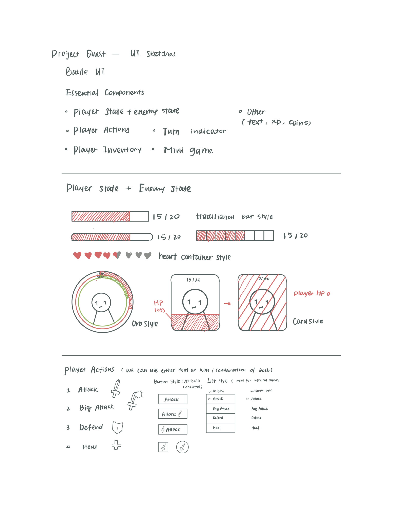Inventory UI
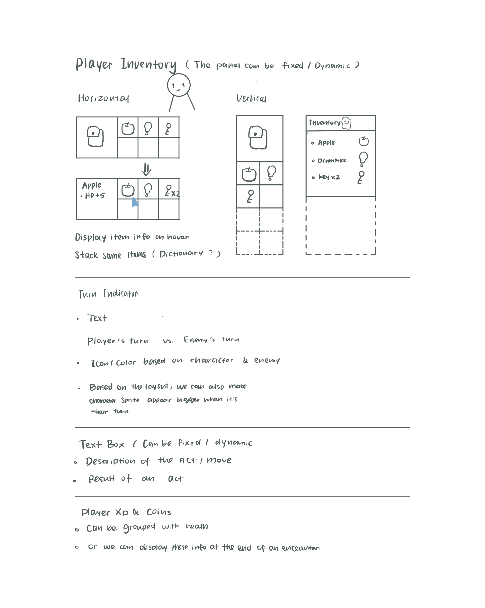Battle storyboard
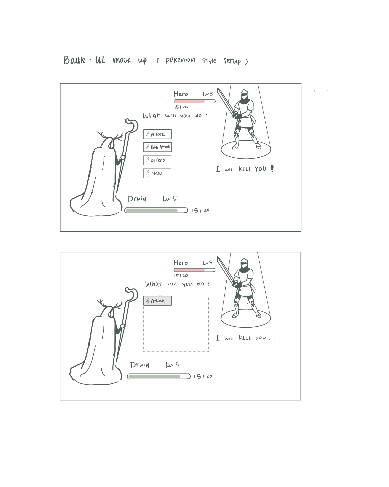Quest UI
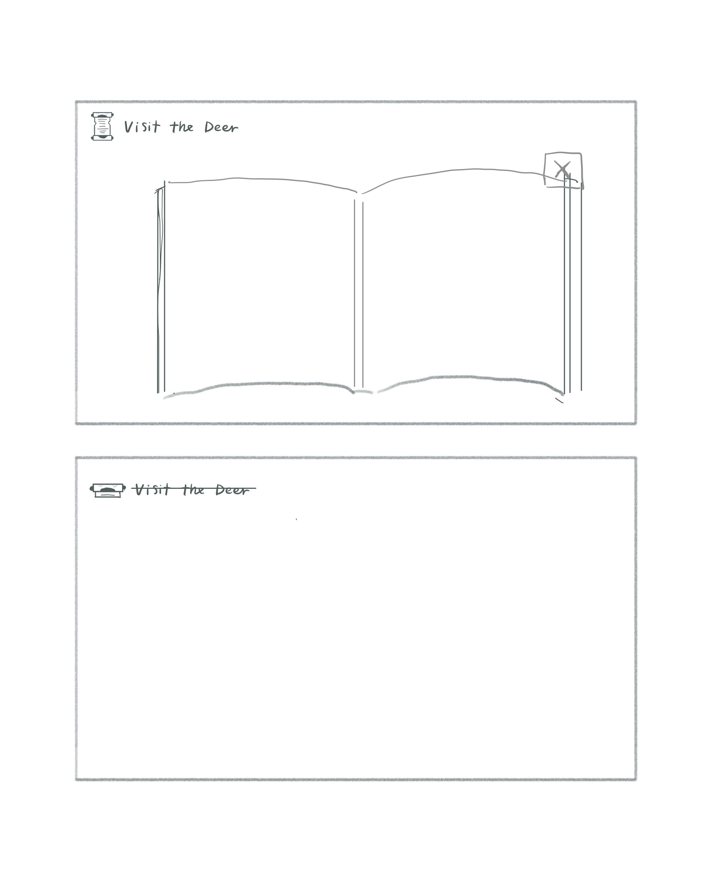Map UI
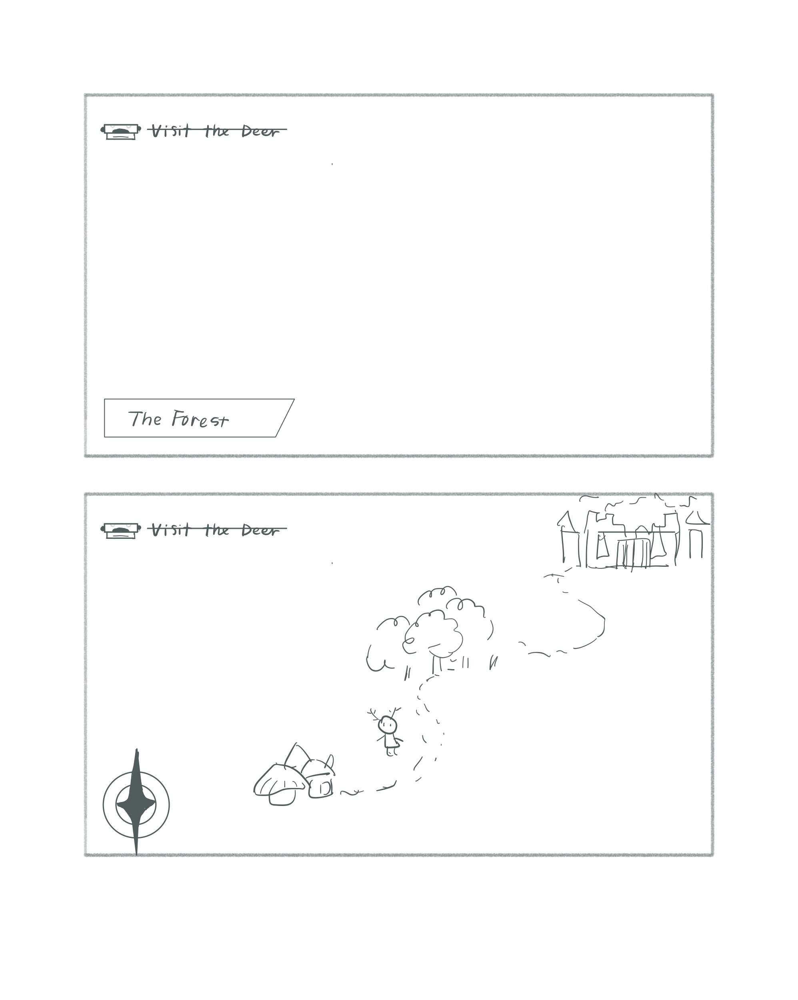After initial design discussion with the rest of the designers and design lead, the team voted against of the idea of having a UI element informing player of the quest information the due to the risk of exploiting game content too early.
Testing and Discovery
Most players experience frustration because of the limited quest information.
However, as development continues and we get more play testing feedback, we discovered:
More than 80% of the players struggle with understanding what to expect for the current quest and tracking their progress.
"I wish I could see my progress on different quests."
"It would be nice to see how many items I collected so far and how many more is needed"
Complex backend quest system
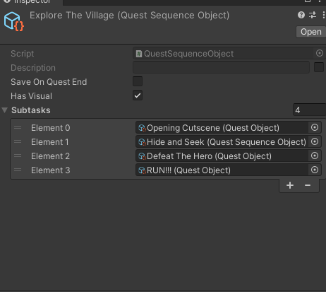Vague collection quest prompt
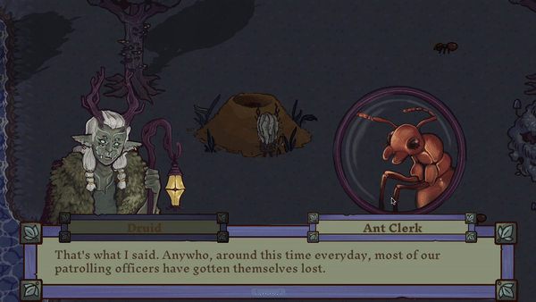Although the narrative team and level designers iterated on the NPC dialogues in attempt to better communicate what needs to be done for each quest, the text-heavy information can be overwhelming for players
Our team realized the flaws with not showing any quest related information, and quickly pivoted the direction with a new problem statement:
How can I redesign the current game UI to increase the visibility of system status and effectively guide player through the rich narrative and gameplay content without spoiling the fun of exploration?
I decided to revisit my quest ui design and this time more research and analysis needed to be done so that I can persuade the team.
Research and Design Process
We need a UI system that informs our player their current objective and overall progress
Design Rationale and Competitive Analysis
| Quest Marker | Quest Log | |
|---|---|---|
| Where it is located on the screen | A component of the player HUD (heads-up display), meaning that the information is visually relayed to the player as part of a game’s UI. | A part of the pop-up pause menu, where the player is able to pause the game process and adjust the game settings or read about the their quests. |
| What is the most important information | The current objective Player’s progress on the current objective. | contextual background information about the area detailed description of the current objective Player’s overall progress |
| Examples from some narrative & quests driven games | 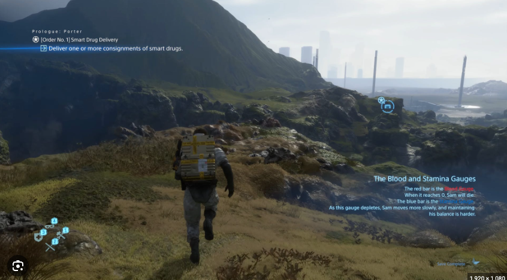 | 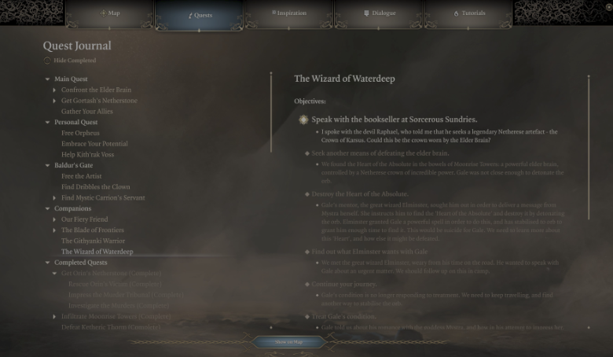 |
| More examples | 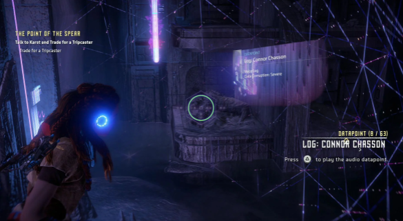 | 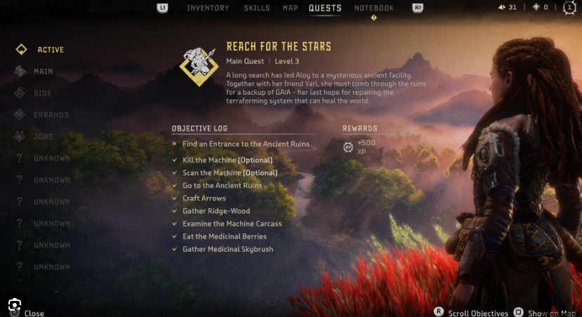 |
| More examples | 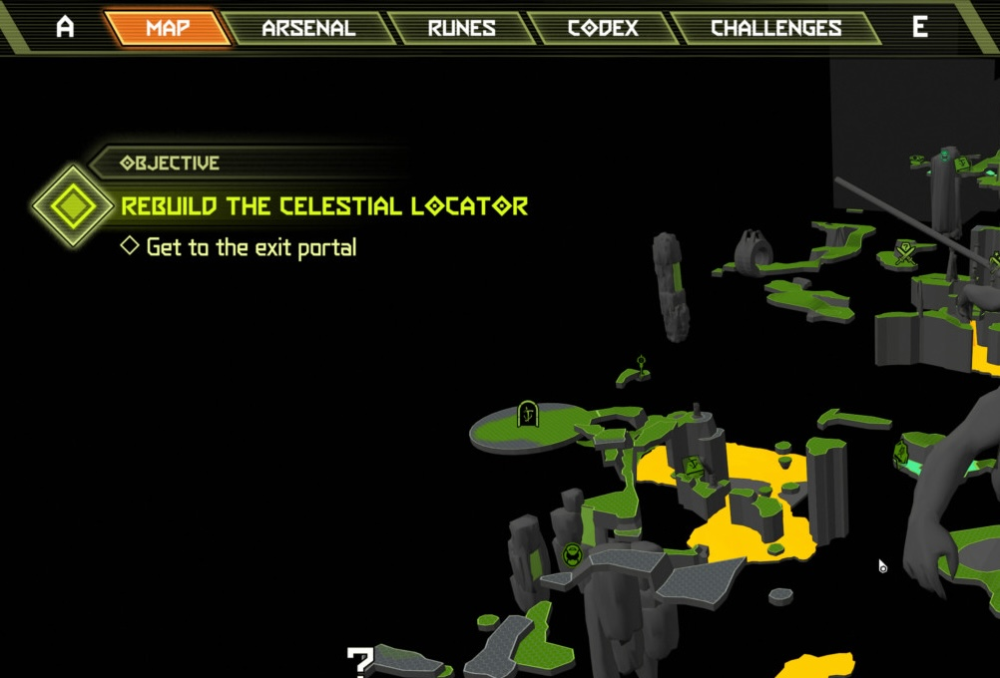 | 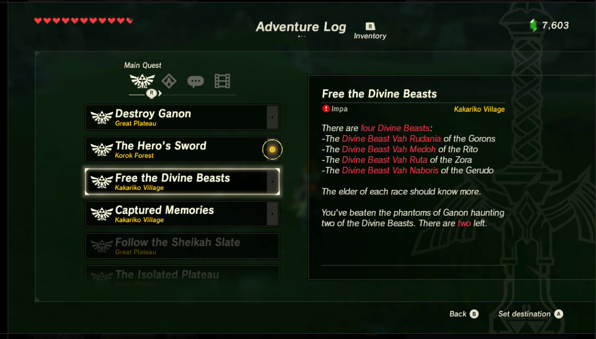 |
After I presented the initial findings to and had a few rounds of discussion with the team, we were able to reach an agreement that it is necessary to implement both because:
-
An on-screen quest marker can make it less intrusive to inform the player of their current objective
-
The quest log can help player to have a better understanding of the storyline and their overall progress
Quest Marker
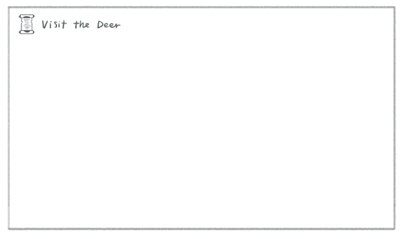Quest Log
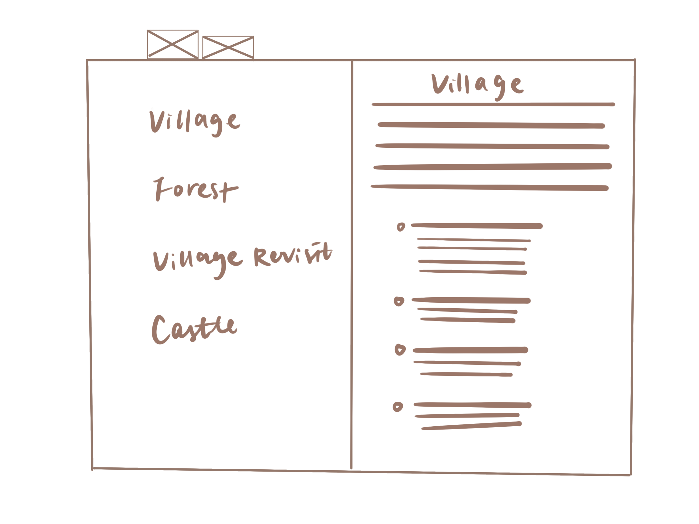Final Design
A resigned quest UI system consists of:
-
A quest marker for easy access to current objective
A quest log for contextual background information and progress tracking.
Quest Marker

The quest marker is a small icon plus text that indicate the player's current objective. It only shows the objective when the player just encoutersthe quest or when they hover over the icon.
Quest Log
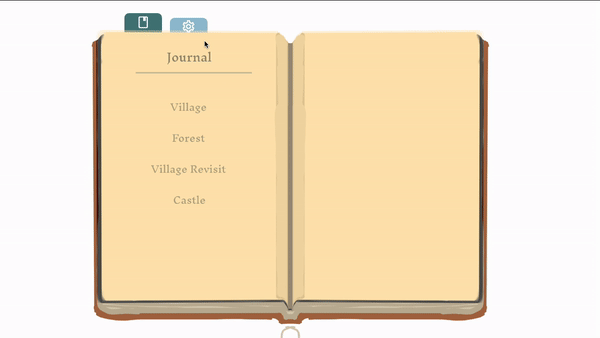The quest log is a pop-up menu that can be accessed from the pause menu. The quest log is designed to be easily navigable and can be updated in real-time as the player progresses through the game.
Gameplay
Quest Marker
Quest Start
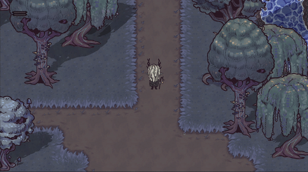Quest End
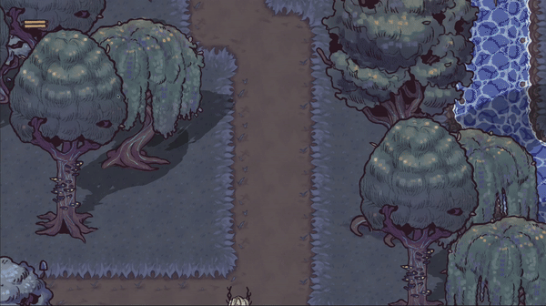Quest Log

Official Trailer with Gameplay Footage
Reflection
Challenges
Feature-Driven Development vs. User-Centric Design
Cross-team Communication
Advocate for My Design Choices
Collecting Player Feedbacks
Takeaways
-
Game UX vs. App/Website UX
Design a schedule builder for users to easily block off time and for better visualization of time allocations. Designing for game UX/UI is very different from designing for an app or website. It is also more challenging since there are less established guidelines. However, the principle of putting the users/players front and centered still holds its value. I found analyzing existing games that were well received by the gaming community the most helpful in understanding the players want and need. Conducting play testing, on the other hand is helpful in identifying gaps between player’s expectation and what our game offers.
-
Fast moving development and scope change
The production timeline was tight because we were determined about a steam release by the end of cycle. However the team made the decision to refactor the core game mechanics due to negative play testing feedbacks. As the UX designer, I learned to be flexible in a fast-paced environment and respond quickly to feature cuts and changes.
-
Visibility of character/game status
I realized that one of the most important thing in game UX/UI is designing to inform the character status or game status. Games are generally very complex with the amount of mechanics and information embedded in the system. It is crucial that designers make strategic moves on what to show and how to present the information to prevent players from feeling overwhelmed.